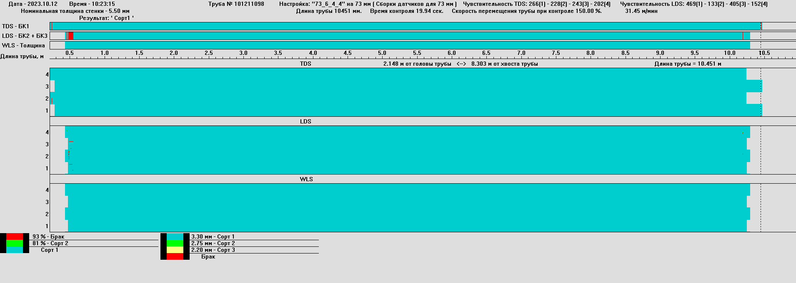
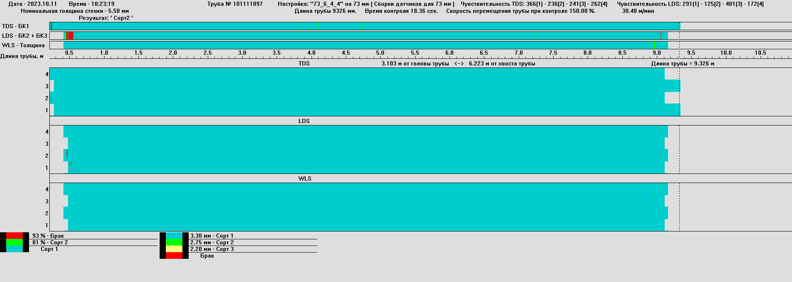
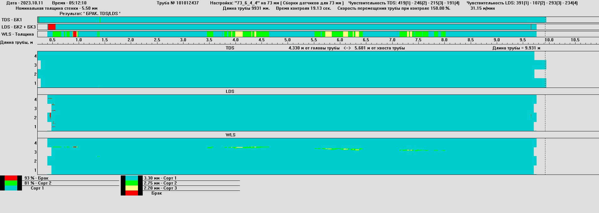
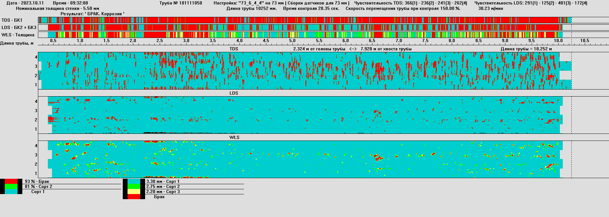

Представлен результат контроля магнитоиндукционной установкой MagnetoScan-3000 (далее –Установка) бывшей в употреблении насосно-компрессорной трубы (дефектограмма).
Установка состоит из блока поперечных дефектов TDS и блока продольных дефектов LDS. Блок контроля WLS (толщинометрия) определяется системными вычислениями на основании сигналов от датчиков блока LDS.
При дефектоскопии трубы системой производится сопоставление амплитуды регистрируемых сигналов с заданными пороговыми значениями. Результат (дефектограмма) выводится на монитор. Установки с указанием в цветовых схемах превышений сигналов для каждого блока контроля отдельно.
Заданный при настройке цвет, соответствует признаку качества НКТ: синий – 1 сорт (рис.1), зеленый – 2 сорт (рис.2), желтый – 3 сорт (рис.3), красный – брак (рис.4).
Исходные данные: Труба НКТ 73 мм длиной 9839 мм.
Рисунок 1. Дефектограмма трубы 1 сорта
Рисунок 2. Дефектограмма трубы 2 сорта
Рисунок 3. Дефектограмма трубы 3 сорта
Рисунок 4. Дефектограмма трубы категории «брак»